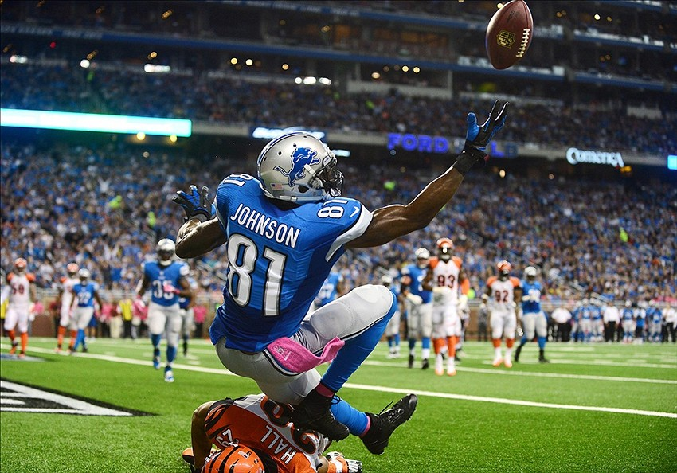

Here is a picture from the sports category to be used today's chat topic. An amazing one handed catch, while falling backwards, by Calvin Johnson. This player has made many great catches in his career and some great photography has come from it.

Vote for this photo below!
If you think this photo should win this months spot in the Winning Photos Gallery, click below to vote for it and give it a better chance to win.
Welcome to Chat!
Chat about the pictures you see on the left! Please be kind.